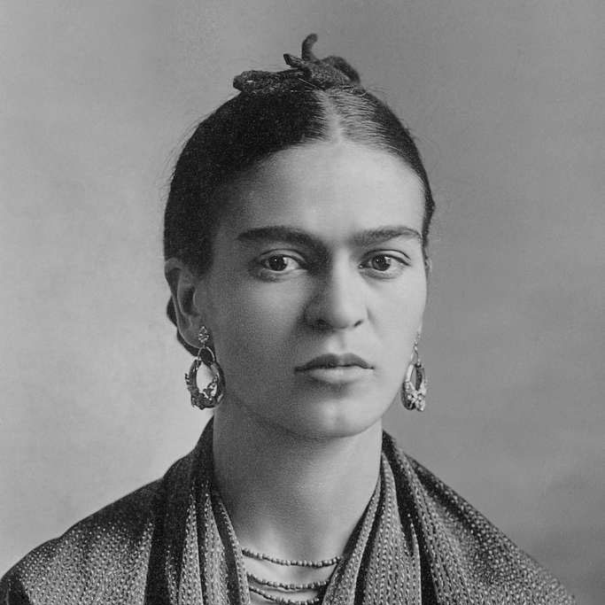
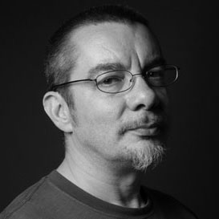

Art
Artists
Frida Kahlo,

Image of Frida Kalhlo by Guillermo Kahlo
They thought I was a Surrealist, but I wasn’t. I never painted dreams. I painted my own reality.
Salvador Dalí, Jean-Michel Basquiat
Design
Designers
Susan Kare
Image of Susan Kare by Tua Ulamac on Flickr
Typography
Typographers
Neville Brody,

Image of Neville Brody by Mannheim Reinhard Jahn
David Carson, Jan Tschichold, Matthew Carter
Engineering
Engineers
Håkon Wium Lie,

Image of Håkon Wium Lie by Kmosman on Wikimedia
Tim Berners-Lee, Linus Torvalds